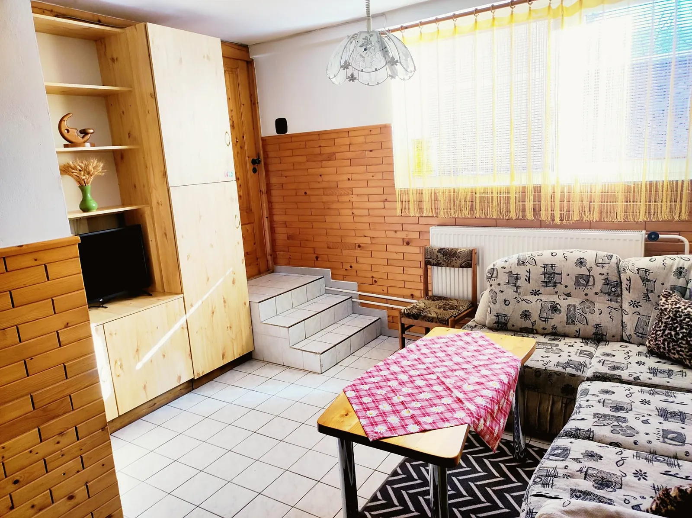

Privát Glončák Ubytovanie v Zuberci, 500 metrov od zjazdovky
Samostatná prístavba rodinného domu pod Roháčmi pre 2 až 14 hostí. Ráno vyrazíte na túru rovno od dverí, večer si posedíte v altánku pri kotlíku.
- Potraviny400 m
- Reštaurácia450 m
- Zjazdovka500 m
- Autobus650 m
- Vlak12 km
- Tvrdošín20 km


Štyri izby a obývačka pre celú partiu
Bývate v samostatnej prístavbe s vlastným vchodom. Každá zo štyroch izieb má dve samostatné postele a stolík, na prístelky máme rozkladacie kreslá a pohovky. Spolu sa u nás vyspí až 14 ľudí.
Na prízemí je spoločenská miestnosť s televízorom, sedačkou a veľkým stolom. Hneď vedľa kuchyňa s chladničkou, mikrovlnkou, rýchlovarnou kanvicou, plynovým sporákom a dvojplatničkou. Varíte si sami.
- Hostí
- 2–14
- Izby
- 4
- Kúpeľne
- 2
- Cena
- od 14 €
Cena je za osobu a noc.



Altánok, kotlík a miesto na lyže


Pred domom je altánok s grilom a kotlíkom, vonkajšie posedenie a trampolína pre deti. Autá zaparkujete priamo pri dome, lyže a bicykle uložíte v lyžiarni.
- 4 parkovacie miesta pri dome
- lyžiareň a úschovňa bicyklov
- WiFi zdarma v celej prístavbe
- dve spoločné kúpeľne so sprchou a WC
- uteráky dostanete od nás
Čo u nás nečakajte
Sme jednoduchý privát v rodinnom dome, nie hotel. Aby vás nič neprekvapilo:
- kúpeľne sú dve a spoločné, nie na každej izbe
- nemáme wellness, bazén ani umývačku riadu
- raňajky nepodávame, kuchyňa je vaša
- domáce zvieratá u nás nemôžu byť
Zato máte pokoj, priestor pre celú partiu a Roháče za humnami.
Z dverí rovno do Roháčov
Zuberec je vstupná brána do Západných Tatier. V lete sa chodí k plesám a na hrebene Roháčov, v zime lyžovať na Janovky alebo do Spálenej doliny. Keď sa počasie pokazí, Orava má hrady, múzeá aj termálne kúpalisko.
- Múzeum oravskej dedinyskanzen v Brestovej, cestou do Roháčskej doliny3 km
- Roháče – Spálenályžiarske stredisko pod Zverovkou, v lete štart túr k plesám9 km
- Meander Parktermálne kúpalisko v Oraviciach12 km
- Oravský hradOravský Podzámok30 km
- Oravská priehradaplavby loďou a pláže pri Námestove35 km
Vzdialenosti sú orientačné, merané po ceste.
Naplánujte si pobyt
voľné obsadené váš pobyt